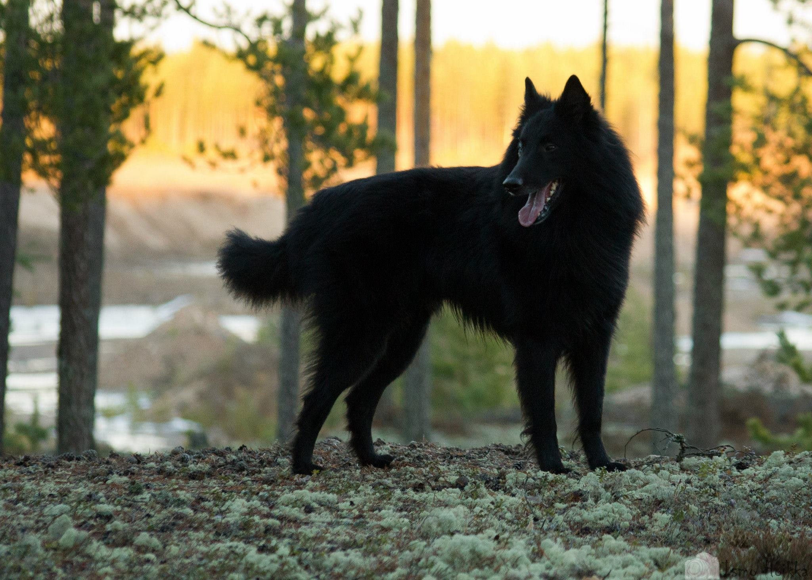
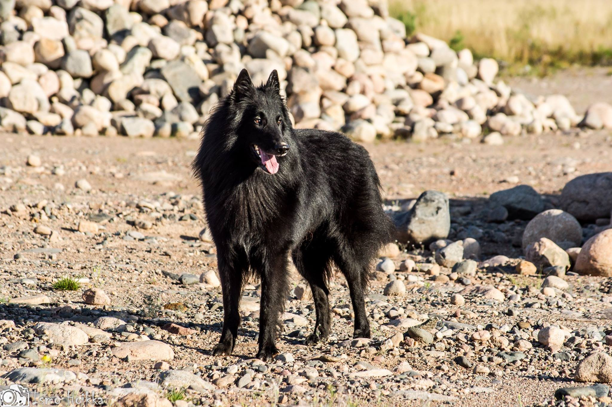
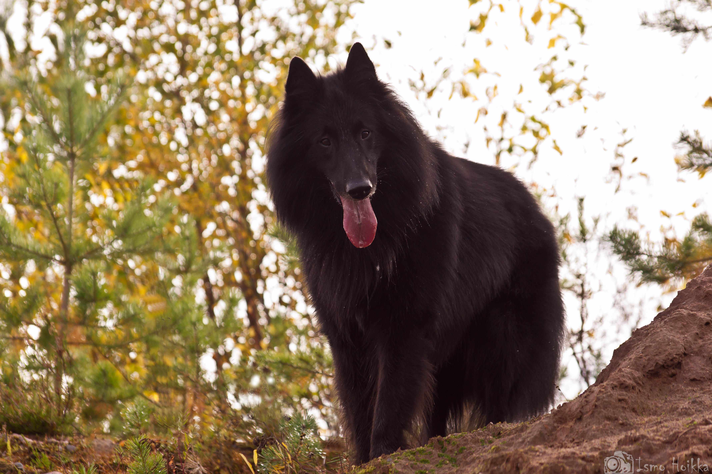

Perustiedot
- Rotu: Belgianpaimenkoira Groenendael
- Syntymäaika: 04.04.2010 04:04
- Kuolinpäivä: 02.02.2022
- Ikä: 11v
- Syntymäpaikka: Suomi
- Sukupuoli: Uros
- Lempinimet: Zeze, Zerppana, Mömski, Mömmötti, Mömmö, Papparainen, Possukka, Herkkupylly
Harrastukset
Agility, Toko, näyttely, kukkien haistelu ja haaveilu
Saavutukset
SA, Vara-SERT
Heijastuksia ja valoja napattu: 0
Luonne
Zero oli jo pennusta alkaen rauhallinen ja helppo tapaus. Se tykkäsi haaveilla ja seurata maailman menoa.
Monesti se saattoi treeneissä karata kentän laidalle haistelemaan kukkasia, kun olisi pitänyt hyppiä agilityesteitä.
Zero ei tykännyt aikaisista aamuherätyksistä, vaan se piti pyylätä pyllystä pihalle. Zero toimi aina meidän sisarusten
ja muiden perheen koirien välisenä erotuomarina tulemalla nahisteluiden väliin.
Ruoka ja herkut olivat Zerolle todella mieluisia, minkä takia sitä kutsuttiin usein Possukaksi tai Herkkupyllyksi.


